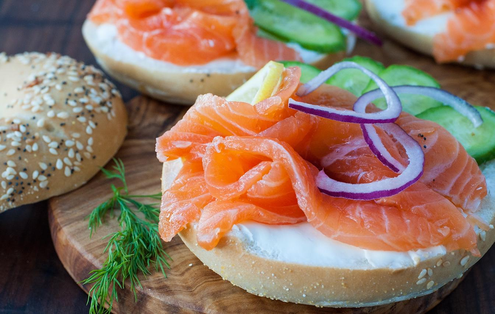

 Ингредиенты:
- Огурец — 2 ломтика
- Красный лук — 1/8 головки
- Маленький помидор
- Молоко — 75 мл
- Жирные сливки — 160 мл
- Сгущенное молоко — 35 мл
- Соевый соус — 1/2 ст.л.
- Столовая ложка сахара
- Столовая ложка уксуса
- 2 столовые ложки кетчупа
- 2 столовые ложки картофельного крахмала с водой
- Сливочное масло — 5 г
- Один тост
Способ приготовления:
- Нарежь помытые огурцы ломтиками. По желанию можешь очистить их от кожуры.
- Крупными кусочками нарежь красный лук. Можешь также «искупать» его в кипятке, чтобы немного сбить резкий запах.
- В том же кипятке ошпарь помидор и сними с него кожуру. После измельчи его в блендере до однородной массы.
- В подогретую кастрюлю добавь молоко, сливки и сгущенку. Помешивай на медленном огне до загущения.
- Тщательно процеди получившуюся массу и положи в холодильник.
- В отдельной емкости смешай коричневый соус: соевый соус, сахар, уксус, кетчуп и картофельный крахмал с водой.
- Подогрей чистую сковородку и перемешай в ней получившуюся домашнюю томатную пасту и коричневый соус. После закипания сними его с огня и снова процеди через сито. Получившийся соус положи в холодильник.
- Смажь тост сливочным маслом и поджарь его в тостере или на сковородке. По готовности снимаем и собираем все воедино.
- Белым соусом сделай цветочек, по краям обводя его нашей томатной пастой. Сверху посыпь овощами. Фирменный рыбный тост Кли готов!
Подача:
Разрезаем бутерброд на две части и наслаждаемся вкусным вкусом!
Приятного аппетита!